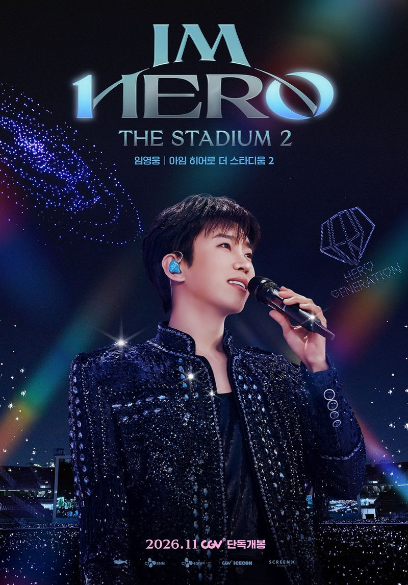
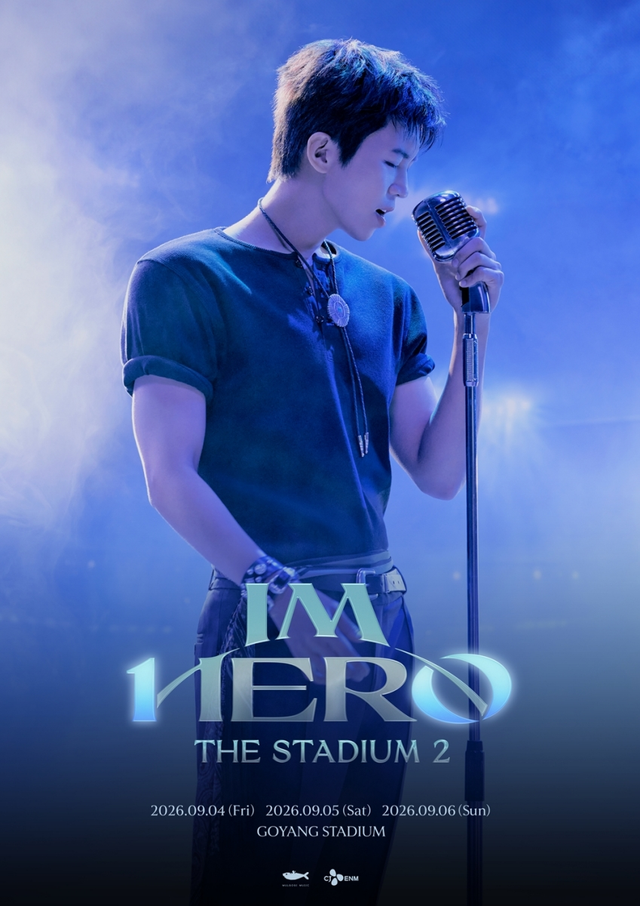
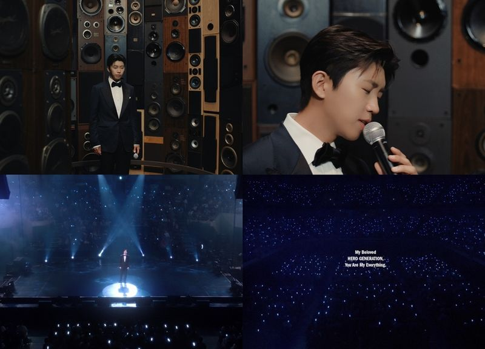
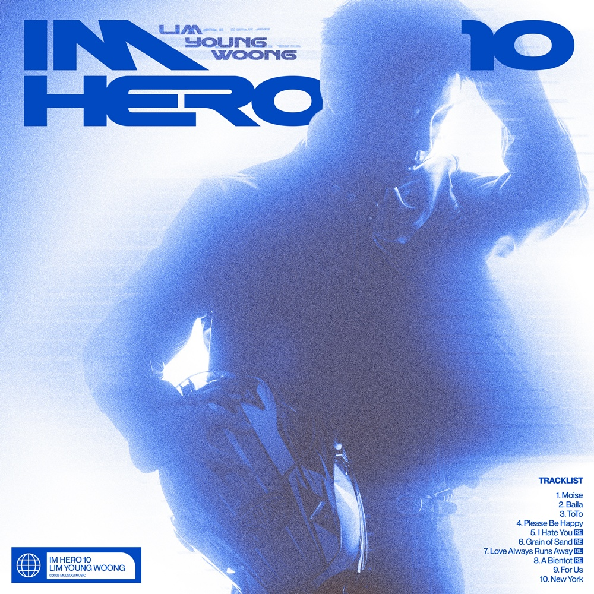

임영웅 영화 개봉 소식 들으셨나요? 데뷔 10주년 스타디움 공연이 ‘아임 히어로 더 스타디움 2’로 극장을 찾아와요. 노래뿐 아니라 드론쇼와 객석의 응원까지 담긴다니 반갑네요. 어떤 공연을 담았는지, 앨범과 이어지는 볼거리는 무엇인지 함께 정리해봤어요.
임영웅 영화로 다시 만나는 스타디움
공연장에 직접 가지 못했을 때 가장 아쉬운 건 역시 그 공간에서만 느낄 수 있는 분위기 아닐까요? 좋아하는 가수의 노래를 듣는 것도 좋지만, 무대가 얼마나 크게 펼쳐졌는지 궁금해지잖아요. ‘임영웅│아임 히어로 더 스타디움 2’는 고양종합운동장 주경기장에서 열린 콘서트를 스크린에 옮긴 공연 실황 영화예요. 공연을 담은 작품인 만큼 무대와 음악이 이야기의 중심에 놓여요.
상영은 전국 CGV에서 진행될 예정이에요. 영화관에서 큰 화면과 입체적인 사운드로 만날 수 있다는 점이 반갑네요. 현장을 다녀온 분에게는 기억을 되짚어보는 시간이, 공연을 놓친 분에게는 무대 구성을 살펴볼 기회가 되겠어요. 저는 짧게 잘라진 영상만 볼 때와는 어떤 차이가 있을지 궁금하더라고요. 아직 개봉을 기다리는 단계라, 공개된 내용 중 반가운 볼거리부터 살펴보려고 해요.

데뷔 10주년과 영웅시대가 함께한 무대
이 작품의 바탕이 된 콘서트는 데뷔 10주년을 기념한 두 번째 스타디움 공연이에요. 한 가수가 자신을 응원해온 팬들과 음악의 여정을 돌아보는 자리라는 점에서 의미가 있죠. 공연을 영화로 만든다는 소식에 단순히 노래를 다시 듣는 것 이상의 기대가 생기는 이유도 여기에 있어요. 노래 사이에 이어지는 무대의 분위기와 객석의 모습이 음악을 어떻게 감싸줄지 눈여겨보고 싶네요.
공식 팬덤 영웅시대와 함께 걸어온 시간을 돌아보고 새로운 걸음을 약속하는 공연이라는 소개도 인상적이에요. 응원봉이 모인 객석은 무대 밖 풍경이면서 동시에 공연의 한 부분이 되잖아요. 좋아하는 노래가 나올 때 관객들의 반응까지 함께 담긴다면, 혼자 음원을 들을 때와는 다른 느낌으로 다가올 것 같아요. 좋아하는 가수의 노래가 팬들의 응원과 함께 흐르는 순간을 스크린에서 만나면 어떤 기분일지 궁금하네요.

‘IM HERO 10’의 노래들이 궁금한 이유
콘서트에서는 스페셜 디지털 앨범 ‘IM HERO 10’에 담긴 곡들의 무대가 처음 공개됐어요. 앨범은 ‘또또’를 비롯한 신곡과 익숙한 곡을 새롭게 들려주는 리메이크를 함께 담고 있죠. ‘미워요’, ‘사랑은 늘 도망가’, ‘모래 알갱이’, ‘A bientot’도 새로운 버전으로 수록돼 있어요. 같은 노래라도 편곡이 달라지면 익숙한 대목이 새롭게 들리곤 해서, 앨범과 공연을 연결해보는 재미가 있겠네요.
임영웅 영화의 반가운 점도 이런 음악을 무대의 흐름 안에서 살펴볼 수 있다는 데 있어요. 앨범으로 들었던 곡이 밴드 연주와 안무, 조명 안에서 어떤 표정을 갖게 되는지 궁금해져요. 다만 콘서트에서 공개된 곡과 최종 영화의 전체 수록곡, 편집 순서를 같다고 단정할 수는 없어요. 상세한 상영 구성이 공개되면 그 부분도 살펴보면 좋겠어요. 지금은 앨범을 바탕으로 영화에서 만나고 싶은 무대를 떠올려보는 정도로도 충분히 설레네요.
임영웅 영화에서 눈여겨볼 드론쇼와 라이브
스타디움 공연의 규모를 느끼게 해주는 장면들도 주요 볼거리예요. 큰 무대 장치와 연출, 밴드의 라이브, 안무팀의 퍼포먼스에 드론쇼와 불꽃놀이가 더해져요. 메인 포스터에도 환하게 웃는 임영웅과 공연장을 수놓은 드론쇼가 함께 담겼어요. 포스터를 보고 있으면 인물의 표정과 넓은 공연장의 풍경이 영화 안에서 어떻게 오갈지 자연스럽게 궁금해지네요.
특히 넓은 객석에서는 한 번에 보기 어려웠던 요소를 화면이 어떻게 보여줄지가 관람 포인트가 될 것 같아요. 가수의 표정을 가까이 담는 장면과 무대 전체를 보여주는 장면은 느낌이 다르잖아요. 노래를 부르는 얼굴에 집중했다가 객석과 하늘까지 시야가 넓어지는 순간을 기대하게 돼요. 이런 장면이 영화의 편집과 사운드를 만나 어떤 느낌으로 다가올지 기다려져요. 무대의 큰 풍경과 노래하는 표정을 번갈아 따라가면 음악도 한층 다채롭게 느껴질 것 같아요.

관람을 기다리며 챙겨두면 좋은 것
공연 실황 영화가 처음인 분이라면 작품명과 상영 극장부터 기억해두면 좋아요. 비슷한 이름의 공연 영상이나 앞선 스타디움 영화와 헷갈리지 않도록 제목 끝의 ‘2’도 살펴보세요. 작품이 담은 장소는 고양종합운동장 주경기장이고, 데뷔 10주년을 기념한 콘서트가 중심이에요. 이 두 가지만 알아도 어떤 공연을 영화로 만나는지 훨씬 또렷해지죠. 앞선 작품을 봤는지와 관계없이 이번 무대의 특징을 살펴보는 출발점이 될 거예요.
예매를 생각하고 있다면 가까운 극장의 실제 상영 회차와 관람 조건이 공개됐을 때 확인하는 게 좋겠어요. 영화가 개봉한다는 안내와 내가 갈 수 있는 지점에서 원하는 시간에 상영한다는 것은 별도로 살펴봐야 하니까요. 저는 노래와 무대, 객석의 응원이 한 화면 안에서 어떤 이야기를 만들어낼지가 가장 궁금하네요. 예매 일정이 열리면 상영 회차도 살펴보면서, 음악이 들려줄 순간을 차근차근 기다려보고 싶어요.
